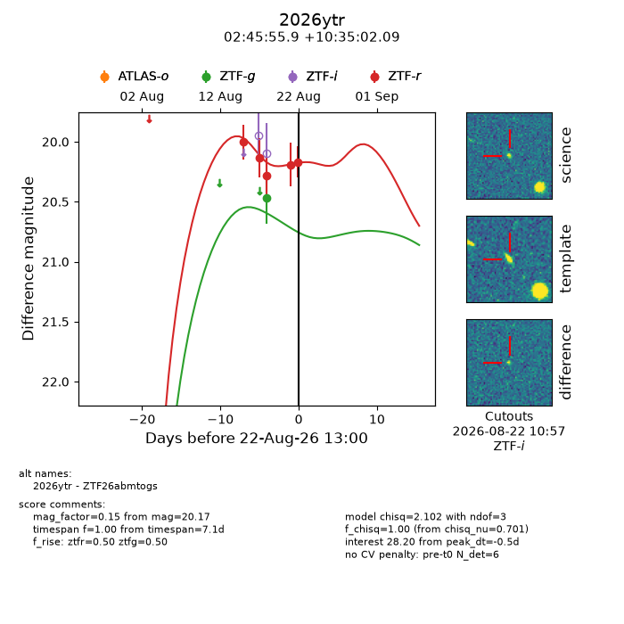
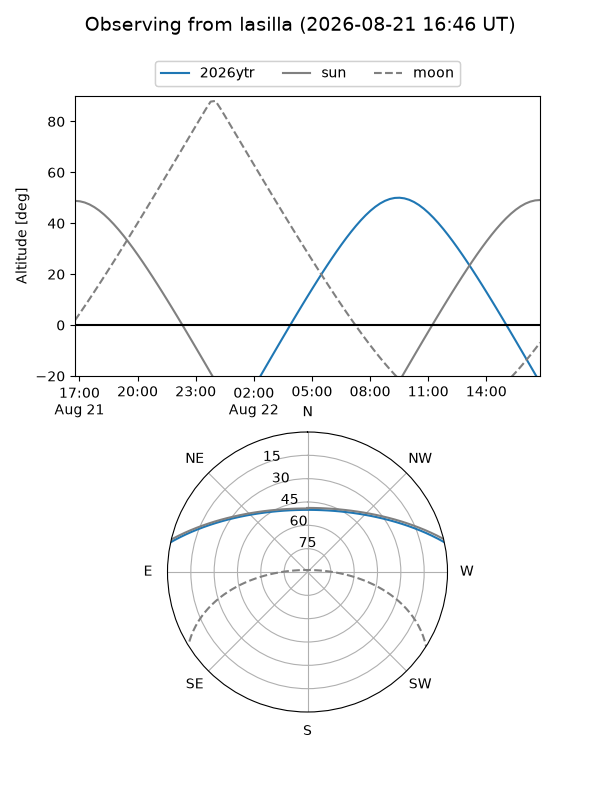
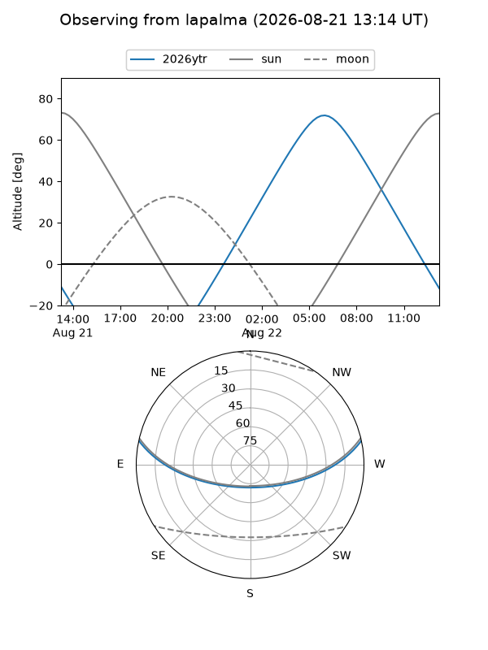
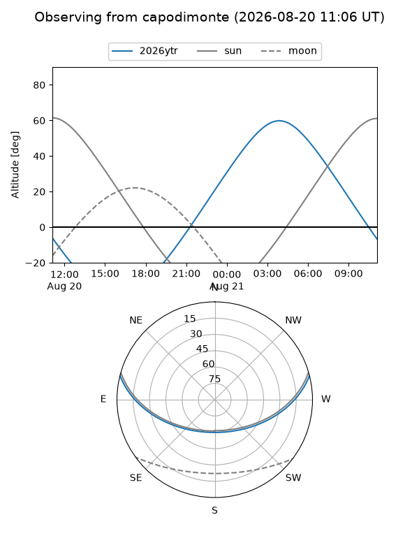
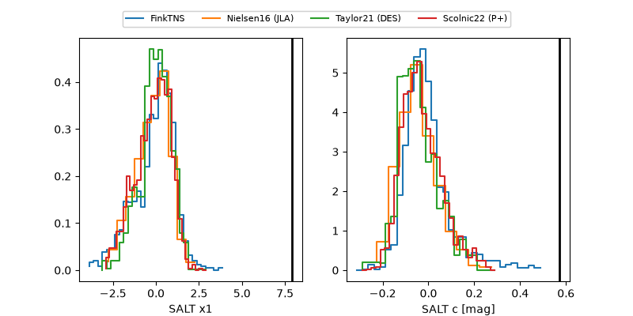

2026ytr
Target 2026ytr at 2026-08-22 13:03
Aliases and brokers:
FINK-ZTF: ztf.fink-portal.org/ZTF26abmtogs
Lasair-ZTF: lasair-ztf.lsst.ac.uk/objects/ZTF26abmtogs
ALeRCE-ZTF: alerce.online/object/ZTF26abmtogs
YSE-PZ: ziggy.ucolick.org/yse/transient_detail/2026ytr
TNS name: wis-tns.org/object/2026ytr
Direct TNS query: direct search
alt names
ZTF26abmtogs (ztf,fink_ztf)
2026ytr (tns,yse)
Coordinates:
equatorial (ra, dec) = 41.4828,+10.58391
equatorial (HMS+DMS) = 02:45:55.87,+10:35:02.09
galactic (l, b) = (163.1480,-43.17091)
Flags:
TNS type: nan
peak dt: -0.5
Photometry:
last ztfg=20.47, ztfr=20.17
1 ztfg, 5 ztfr detections
Lightcurve

Visibility



Additional plots
